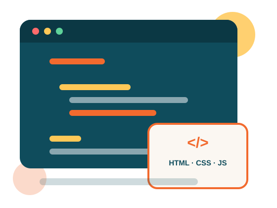
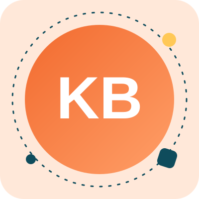

¡Hola! Bienvenido a mi hoja de vida
Soy Kevin, futuro ingeniero de software
Estudiante de Ingeniería de Software en Bogotá. Me gusta aprender construyendo cosas: programas en Java y Python, bases de datos y ahora también páginas web.


Un poco de quién soy
Estoy en formación profesional en Ingeniería de Software, con conocimientos en desarrollo de software, programación orientada a objetos y bases de datos. Me interesa el desarrollo tecnológico y crear soluciones que respondan de manera eficiente a diferentes necesidades y problemas.
Me caracterizo por mantener una actitud de aprendizaje continuo. Mi formación me ha permitido desarrollar una visión orientada al análisis, la resolución de problemas y el cumplimiento de objetivos, con interés en seguir creciendo y consolidando mi perfil profesional en el sector tecnológico.
- Nombre: Kevin Santiago Bohorquez Barragán
- Ciudad: Bogotá D.C., Colombia
- Estudios: Ingeniería de Software, Fundación Universitaria Compensar (desde 2025)
- Idiomas: Español (nativo) e inglés (A2, en formación continua)
7
Formaciones complementarias
Certificaciones, cursos y un diplomado.
4
Experiencias laborales
Tres en servicio al cliente y una práctica en analítica.
5
Proyectos
Personales, en equipo y esta misma página.